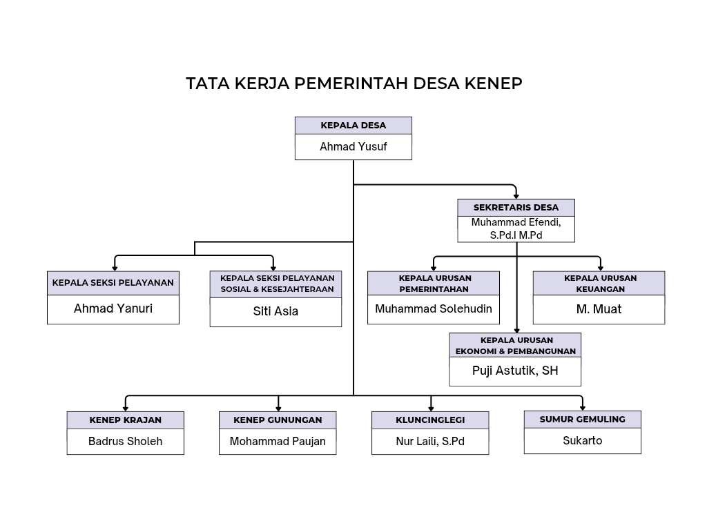

Profil Desa
Visi
Membangun Desa menuju masyarakat yang maju, makmur, tentram, sejahtera dan bahagia dengan memberi pelayanan yang maksimal dan tercukupi di segala bidang
Misi
- Penyediaan air bersih untuk air minum dan kebutuhan sehari-hari bagi masyarakat
- Memaksimalkan fasilitas dan pelayanan kesehatan bagi masyarakat
- Sektor pertanian
- Peningkatan UMKM di Desa Kenep
- Pembinaan dan pelatihan bagi petani supaya memunculkan petani milenia
- Pembangunan infrastruktur sesuai dengan kebutuhan di lingkungan sekitar dan pertanian ataupun fasilitas umum
- Memberdayakan adat istiadat yang ada di Desa Kenep
- Mengadakan proses sertifikat tanah atau ptsl secara gratis
- Pembinaan dan pemberdayaan bagi pemuda di Desa Kenep
- Meningkatkan kualitas Sumber Daya Manusia (SDM)
- Meningkatkan kesehatan masyarakat dan kelestarian lingkungan
- Meningkatkan potensi ekonomi masyarakat
- Meningkatkan partisipasi masyarakat dalam pembangunan desa
- Meningkatkan peran Pemerintah desa dan pelayanan terhadap masyarakat
Sejarah
Setelah digali dan ditelusuri dari beberapa narasumber khususnya dari sesepuh maupun tokoh masyarakat Desa Kenep, konon kabarnya pada masa penjajahan Belanda dan Jepang Desa ini dijadikan sebagai tempat pertempuran tentara Indonesia untuk mengusir penjajah dari Desa ini pada khususnya dan dari Indonesia pada umunya dank arena Desa ini termasuk dataran tinggi dan tanahnya sangat subur dan dalam, sehingga tentara – tentara Belanda maupun Jepang yang melewati daerah ini melihat tanaman padi dan masyarakat yang dating dari daerah Madura dan menginap yang ditunjukkan pada makam pembabat tanah Desa, akhirnya orang tersebut tidak bisa pulang sampai meninggal di Desa Kenep.
Pada jaman penajajah Belanda sekitar abad 19 dimana yang menjadi Kepala Desa (Petinggi ) pada masa itu h. Sirat dan selanjutnya kepimpinan desa ini diganti oleh Bapak Kepala Desa H.Soepardi dan diganti Bapak Kepala Desa Zaeni Efendi dan kepimimpinannya diganti oleh Mo. Solikin Sodiq, Kepemimpinan diganti oleh Nur Sholeh, dan diganti oleh Samsul Arifin serta diganti oleh Nur Sholeh kembali yang mana semua itu proses pemilihan dan pengangkatannya dengan caa pemilihan
Struktur Organisasi Pemerintahan
Geografis Desa
- Utara: Desa Sidowayah
- Timur: Distrik Pandaan
- Selatan: Desa Ngembe
- Barat: Desa GunungSari